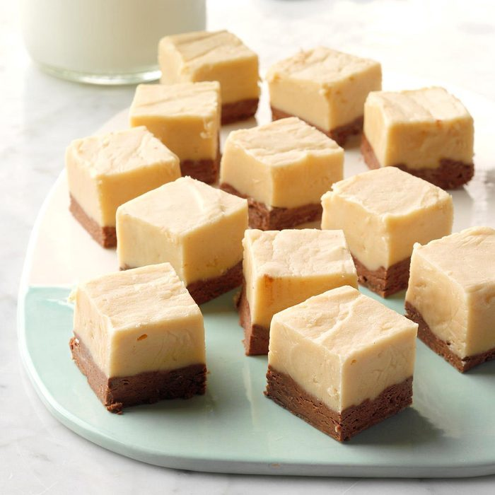

Easy Peanut Butter Fudge
Total Time: 15 min Prep- 15 min
This peanut butter fudge recipe lives up to its easy title!

An unbelievably easy recipe with peanut butter & marshmallow creme
Ingredients
- 2 teaspoons butter, softened
- 2 cups sugar
- 1/2 cup milk
- 1 jar (7 oz) marshmallow creme
- 1-1/3 cups peanut butter
Directions
- Line a 8-in square pan with foil and grease with butter.
- In a heavy saucepan, combine sugar and milk; bring to a boil over medium heat, stirring constantly. Boil for 3 minutes, then remove from heat.
- Stir in peanut butter and marshmallow creme until blended. Immediately spread into prepared pan; cool slightly
- Refigerate until firm; Using foil, lift fudge out of pan. Remove foil; cut into squares. Store between layers of waxed paper in an airtight container.
Nutrition Factss
1 piece: 99 calories, 4g fat (2g saturated), 7mg cholesterol, 39mg sodium, 15g carbohydrate (14g sugar), 1g protein